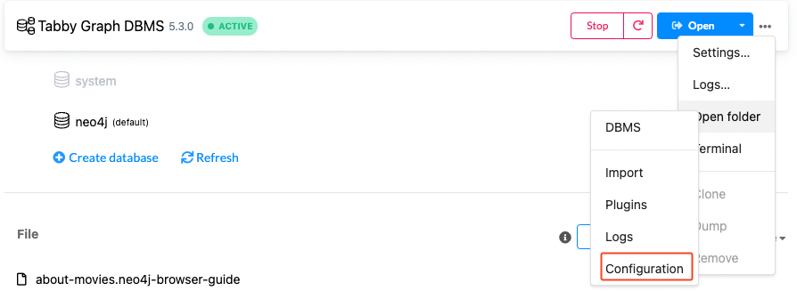

步骤
参考 Neo4j 环境配置 V5 进行配置。
首先，安装 Neo4j 5.10.0 版本『当前最新版本』数据库，见 Neo4j 安装。
安装 APOC 插件
手动安装方式，下载如下两个项目的 release 版本，注意需下载与 Neo4j 数据库兼容的版本，例如数据库版本为 v5.3.0，则下载 5.3.x 版本的 apoc
这里由于 tabby 需要使用调用过程 apoc.periodic.iterate，该功能在 apoc-extended 低版本中没有，至少在 5.3.1 中未找到。
修改数据库配置
进入数据库安装位置下的 conf 目录，

打开 neo4j.conf 文件，确保如下内容配置正确
# 注释下面的配置，允许从本地任意位置载入csv文件
# server.directories.import=import
# 允许 apoc 扩展
dbms.security.procedures.unrestricted=jwt.security.*,apoc.*
# 修改内存相关配置
# 可以通过官方的neo4j-admin来推荐配置内存大小，https://neo4j.com/docs/operations-manual/current/tools/neo4j-admin/neo4j-admin-memrec/
dbms.memory.heap.initial_size=1G
dbms.memory.heap.max_size=4G
dbms.memory.pagecache.size=4G内存配置，可通过如下命令得到推荐配置，将输出的内容覆盖已有配置即可。
./neo4j-admin server memory-recommendation
neo4j-admin位于neo4j安装目录的bin目录下。
在 conf 目录下新建 apoc.conf 文件，写入如下内容
apoc.import.file.enabled=true
apoc.import.file.use_neo4j_config=false安装 Tabby-path-finder 插件
将 tabby 的 env 目录下的 tabby-path-finder-1.0.jar，拷贝至 neo4j 数据库的 plugins 目录下
ls -l plugins/
total 37560
-rw-r--r-- 1 trganda staff 2217 Sep 6 11:32 README.txt
-rw-r--r-- 1 trganda staff 15173707 Sep 6 11:48 apoc5plus-5.3.0.jar
-rw-r--r-- 1 trganda staff 538418 Sep 6 11:32 neo4j-jwt-addon-1.3.0.jar
-rw-r--r--@ 1 trganda staff 3508493 May 18 17:08 tabby-path-finder-1.0.jar修改 Tabby 配置
打开 tabby 下的 conf/settings.properties 文件，配置 neo4j 数据库的地址，用户名和密码。
tabby.neo4j.username = neo4j
tabby.neo4j.password = neo4j
tabby.neo4j.url = bolt://127.0.0.1:7687
检查配置
启动 Neo4j 数据库后，分别执行如下命令，确认插件被成功加载
CALL apoc.help('all')
CALL tabby.help('all')
创建数据库索引
CREATE CONSTRAINT c1 IF NOT EXISTS FOR (c:Class) REQUIRE c.ID IS UNIQUE;
CREATE CONSTRAINT c2 IF NOT EXISTS FOR (c:Class) REQUIRE c.NAME IS UNIQUE;
CREATE CONSTRAINT c3 IF NOT EXISTS FOR (m:Method) REQUIRE m.ID IS UNIQUE;
CREATE CONSTRAINT c4 IF NOT EXISTS FOR (m:Method) REQUIRE m.SIGNATURE IS UNIQUE;
CREATE INDEX index1 IF NOT EXISTS FOR (m:Method) ON (m.NAME);
CREATE INDEX index2 IF NOT EXISTS FOR (m:Method) ON (m.CLASSNAME);
CREATE INDEX index3 IF NOT EXISTS FOR (m:Method) ON (m.NAME, m.CLASSNAME);
CREATE INDEX index4 IF NOT EXISTS FOR (m:Method) ON (m.NAME, m.NAME0);
CREATE INDEX index5 IF NOT EXISTS FOR (m:Method) ON (m.SIGNATURE);
CREATE INDEX index6 IF NOT EXISTS FOR (m:Method) ON (m.NAME0);
CREATE INDEX index7 IF NOT EXISTS FOR (m:Method) ON (m.NAME0, m.CLASSNAME);
:schema //查看表库
:sysinfo //查看数据库信息
如果经过多次的导入/删除操作，图数据库占用了很多的硬盘存储，那么可以将原有的图数据库删除，重新按照上面的步骤新建图数据库，并删除所有约束
DROP CONSTRAINT c1;
DROP CONSTRAINT c2;
DROP CONSTRAINT c3;
DROP CONSTRAINT c4;
DROP INDEX index1;
DROP INDEX index2;
DROP INDEX index3;
DROP INDEX index4;
DROP INDEX index5;
DROP INDEX index6;
DROP INDEX index7;